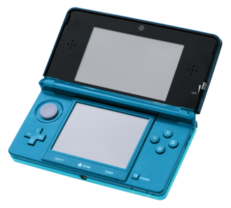
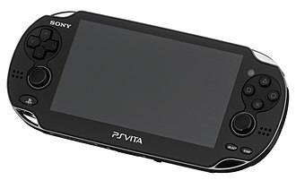
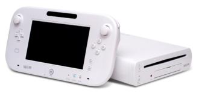
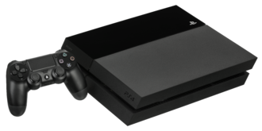
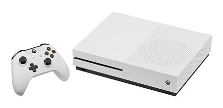
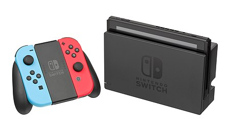

Nintendo 3DS
The Nintendo 3DS is a handheld game console produced by Nintendo. It was announced in March 2010 and unveiled at E3 2010 as the successor to the Nintendo DS. The system features backward compatibility with older Nintendo DS video games. As an eighth-generation console, its primary competitor was Sony's PlayStation Vita.
The handheld's most prominent feature is its ability to display stereoscopic 3D effects without the use of 3D glasses or additional accessories, and offers new features such as the StreetPass and SpotPass tag modes, powered by Nintendo Network; augmented reality using its 3D cameras; and Virtual Console, which allows owners to download and play games originally released on older video game systems. It is also pre-loaded with various applications including an online distribution store called Nintendo eShop; a social networking service called Miiverse (shut down on November 8, 2017); an Internet Browser; the Netflix, Hulu Plus, and YouTube streaming video services; Nintendo Video; a messaging application called Swapnote (known as Nintendo Letter Box in Europe and Australia); and Mii Maker.
The Nintendo 3DS was released in Japan on February 26, 2011, and worldwide beginning in March 2011. Less than six months later on July 28, 2011, Nintendo announced a significant price reduction from US$249 to US$169 amid disappointing launch sales. The company offered ten free Nintendo Entertainment System games and ten free Game Boy Advance games from the Nintendo eShop to consumers who bought the system at the original launch price. This strategy was considered a major success, and the console went on to become one of Nintendo's most successful handheld consoles in the first two years of its release. As of March 31, 2021, the Nintendo 3DS family of systems combined have sold 75.94 million units, and games for the systems have sold 386.48 million units as of March 31, 2021.
The 3DS received multiple redesigns over the course of its life. The Nintendo 3DS XL, a larger model, was first released in Japan and Europe in July 2012, featuring a 90% larger screen. An "entry-level" version of the console, the Nintendo 2DS, with a fixed "slate" form factor and lacking autostereoscopic (3D) functionality, was released in Western markets in October 2013. The New Nintendo 3DS features a more powerful CPU, a second analog stick called the C-Stick, additional buttons, an improved camera, and other changes, and was first released in Japan in October 2014.
The 3DS family was discontinued on September 16, 2020, though the Nintendo eShop and Nintendo Network remain active in most regions. While the 3DS stands as the lowest-selling Nintendo handheld, largely due to major adoption of smart devices, it is still regarded as a success, hosting several critically acclaimed games that helped it stay competitive, and helping Nintendo stay relevant in the industry despite the commercial underperformance of the Wii U.
PlayStation Vita
The PlayStation Vita (PS Vita or Vita) is a handheld video game console developed and marketed by Sony Computer Entertainment. It was first released in Japan on December 17, 2011, and in North America, Europe, and other international territories beginning on February 22, 2012. The console is the successor to the PlayStation Portable, and a part of the PlayStation brand of gaming devices; as part of the eighth generation of video game consoles, it primarily competed with the Nintendo 3DS.
The original model of the handheld includes a 5-inch (130 mm) OLED multi-touch capacitive touchscreen, two analog joysticks, and front and shoulder push-button input, and supports Bluetooth, Wi-Fi, and optional 3G. The Vita features a quad-core ARM Cortex-A9 MPCore CPU and a quad-core SGX543MP GPU. The PS Vita 2000 series, a revised version of the system, was released across 2013 and 2014. It has all of the same features with a slightly smaller size, extended battery life, and an LCD screen instead of OLED. Sony released the PlayStation TV, a short-lived, re-purposed version of the Vita that uses a television screen like a home video game console, discontinued at the end of 2015.
The Vita's design was intended to meld the experience of big-budget, dedicated video game platforms with the then up-and-coming trend of mobile gaming as seen on smart phones and tablets. However, in the year after the device's successful launch, sales of the hardware and its bigger budget games stalled, threatening to end its lifespan. A concentrated effort to attract smaller independent developers in the West, combined with strong support from mid-level Japanese companies, helped keep the platform afloat. Though this led to less diversity in its game library, it strengthened support in JRPGs, visual novels, and Western-developed indie games. This built moderate sales in Japan and a smaller yet passionate userbase in the West. Though Sony has not released exact sales figures, late-lifespan sales estimates are around 15 to 16 million units. In the platform's later years, Sony promoted the PlayStation Vita's ability to work in conjunction with its other gaming products, such as Remote Play of PlayStation 4 games, similar to the Wii U's function of Off-TV Play.
Whilst the Vita hosted several acclaimed titles and built a small but loyal and passionate fanbase, the system is regarded as a commercial failure, with a lack of support from Sony and major third-party developers along with competition from the significantly more successful Nintendo 3DS and smart devices noted as major factors. Production of the system and physical game cards in the West ended in March 2019, with Sony having no plans for a successor.
Nintendo Wii U
The Wii U (/ˌwiː ˈjuː/ WEE YOO) is a home video game console developed by Nintendo as the successor to the Wii. Released in late 2012, it is the first eighth-generation video game console and competed with Microsoft's Xbox One and Sony's PlayStation 4.
The Wii U is the first Nintendo console to support HD graphics. The system's primary controller is the Wii U GamePad, which features an embedded touchscreen, directional buttons, analog sticks, and action buttons. The screen can be used either as a supplement to the main display or in supported games to play the game directly on the GamePad. The Wii U Pro Controller can be used in its place as a more traditional alternative. The Wii U is backward compatible with all Wii software and accessories. Games can support any combination of the GamePad, Wii Remote, Nunchuk, Balance Board, or Nintendo's Classic Controller or Wii U Pro Controller. Online functionality centers around the Nintendo Network platform and Miiverse, an integrated social networking service which allowed users to share content in game-specific communities.
Response to the Wii U was mixed. It was praised for its innovative GamePad controller, improvements to online functionality over the Wii, backwards compatibility with Wii software and peripherals, and price; however, it was criticized for its user interface and functionality, and the GamePad's short battery life. It had low sales, primarily credited to a weak lineup of launch games, limited third-party support, and poor marketing including the lack of distinguishing the unique functionality of the GamePad from just being a tablet device. Wii U production ended in January 2017. On March 3, 2017, Nintendo released its successor, the Nintendo Switch, which retained and refined concepts introduced with the Wii U.
PlayStation 4
The PlayStation 4 (PS4) is a home video game console developed by Sony Computer Entertainment. Announced as the successor to the PlayStation 3 in February 2013, it was launched on November 15, 2013, in North America, November 29, 2013 in Europe, South America and Australia, and on February 22, 2014 in Japan. A console of the eighth generation, it competes with Microsoft's Xbox One, Nintendo's Wii U and the Switch.
Moving away from the more complex Cell microarchitecture of its predecessor, the console features an AMD Accelerated Processing Unit (APU) built upon the x86-64 architecture, which can theoretically peak at 1.84 teraflops; AMD stated that it was the "most powerful" APU it had developed to date. The PlayStation 4 places an increased emphasis on social interaction and integration with other devices and services, including the ability to play games off-console on PlayStation Vita and other supported devices ("Remote Play"), the ability to stream gameplay online or to friends, with them controlling gameplay remotely ("Share Play"). The console's controller was also redesigned and improved over the PlayStation 3, with improved buttons and analog sticks, and an integrated touchpad among other changes. The console also supports HDR10 High-dynamic-range video and playback of 4K resolution multimedia.
The PlayStation 4 was released to critical acclaim, with critics praising Sony for acknowledging its consumers' needs, embracing independent game development, and for not imposing the restrictive digital rights management schemes like those originally announced by Microsoft for the Xbox One. Critics and third-party studios, before its launch, also praised the capabilities of the PlayStation 4 in comparison to its competitors; developers described the performance difference between the console and Xbox One as "significant" and "obvious." Heightened demand also helped Sony top global console sales. By October 2019, PS4 became the second best-selling home game console of all time, behind the PlayStation 2.
On September 7, 2016, Sony unveiled the PlayStation 4 Slim, a smaller version of the console; and a high-end version called the PlayStation 4 Pro, which features an upgraded GPU and a higher CPU clock rate to support enhanced performance and 4K resolution in supported games.
Its successor, the PlayStation 5, was released in November 2020, with Sony discontinuing in Japan all PlayStation 4 models except the Slim version in January 2021, while PS4 Standard and Pro versions are still being produced in western markets following their statement of 3-year support of PS4.
XBox One
The Xbox One is a line of home video game consoles developed by Microsoft. Announced in May 2013, it is the successor to Xbox 360 and the third base console in the Xbox series of video game consoles. It was first released in North America, parts of Europe, Australia, and South America in November 2013 and in Japan, China, and other European countries in September 2014. It is the first Xbox game console to be released in China, specifically in the Shanghai Free-Trade Zone. Microsoft marketed the device as an "all-in-one entertainment system", hence the name "Xbox One".[15][16] An eighth-generation console, it mainly competed against Sony's PlayStation 4 and Nintendo's Wii U and later the Switch.
Moving away from its predecessor's PowerPC-based architecture, the Xbox One marks a shift back to the x86 architecture used in the original Xbox; it features an AMD Accelerated Processing Unit (APU) built around the x86-64 instruction set. Xbox One's controller was redesigned over the Xbox 360's, with a redesigned body, D-pad, and triggers capable of delivering directional haptic feedback. The console places an increased emphasis on cloud computing, as well as social networking features and the ability to record and share video clips or screenshots from gameplay or livestream directly to streaming services such as Mixer and Twitch. Games can also be played off-console via a local area network on supported Windows 10 devices. The console can play Blu-ray Disc, and overlay live television programming from an existing set-top box or a digital tuner for digital terrestrial television with an enhanced program guide. The console optionally included a redesigned Kinect sensor, marketed as the "Kinect 2.0", providing improved motion tracking and voice recognition.
The Xbox One received positive reviews for its refined controller design, multimedia features, and voice navigation. Its quieter and cooler design was praised for making the console more reliable than its predecessor at launch, but the console was generally criticized for running games at a technically lower graphical level than the PlayStation 4. Its original user interface was panned for being nonintuitive, although changes made to it and other aspects of the console's software post-launch received a positive reception. Its Kinect received praise for its improved motion-tracking accuracy, its face recognition logins, and its voice commands.
The original Xbox One model was succeeded by the Xbox One S in 2016, which has a smaller form factor and support for HDR10 high-dynamic-range video, as well as support for 4K video playback and upscaling of games from 1080p to 4K. It was praised for its smaller size, its on-screen visual improvements, and its lack of an external power supply, but its regressions such as the lack of a native Kinect port were noted. A high-end model, named Xbox One X, was unveiled in June 2017 and released in November; it features upgraded hardware specifications and support for rendering games at 4K resolution. The system was succeeded by the Xbox Series X and Series S consoles, which launched on November 10, 2020.
Nintendo Switch
The Nintendo Switch is a video game console developed by Nintendo and released worldwide in most regions on March 3, 2017. The console itself is a tablet that can either be docked for use as a home console or used as a portable device, making it a hybrid console. Its wireless Joy-Con controllers, with standard buttons and directional analog sticks for user input, motion sensing, and tactile feedback, can attach to both sides of the console to support handheld-style play. They can also connect to a grip accessory to provide a traditional home console gamepad form, or be used individually in the hand like the Wii Remote and Nunchuk, supporting local multiplayer modes. The Nintendo Switch's software supports online gaming through Internet connectivity, as well as local wireless ad hoc connectivity with other consoles. Nintendo Switch games and software are available on both physical flash-based ROM cartridges and digital distribution via Nintendo eShop; the system has no region lockout. A handheld-focused revision of the system, called the Nintendo Switch Lite, was released on September 20, 2019.
The Nintendo Switch was unveiled on October 20, 2016. Known in development by its codename NX, the concept of the Switch came about as Nintendo's reaction to several quarters of financial losses into 2014, attributed to poor sales of its previous console, the Wii U, and market competition from mobile games. Nintendo's then-president Satoru Iwata pushed the company towards mobile gaming and novel hardware. The Nintendo Switch's design is aimed at a wide demographic of video game players through multiple modes of use. Nintendo opted to use more standard electronic components, such as a chipset based on Nvidia's Tegra line, to make development for the console easier for programmers and more compatible with existing game engines. As the Wii U had struggled to gain external support, leaving it with a weak software library, Nintendo preemptively sought the support of many third-party developers and publishers to help build out the Switch's game library alongside Nintendo's first-party titles, including many independent video game studios. While Nintendo initially anticipated around 100 titles for its first year, over 320 titles from first-party, third-party, and independent developers were released by the end of 2017.
As an eighth-generation console, the Nintendo Switch competes with Microsoft's Xbox One and Sony's PlayStation 4. Nearly three million console units were shipped in its first month, exceeding Nintendo's initial projection of two million and within a year of release achieved over 14 million units sold worldwide, outselling total lifetime sales of the Wii U. By the start of 2018, the Switch became the fastest-selling home or hybrid console in both Japan and the United States. As of March 2021, the Nintendo Switch and Nintendo Switch Lite have sold more than 84 million units worldwide. Switch sales have been strongly tied to sales of Nintendo's first-party titles, with six games—The Legend of Zelda: Breath of the Wild, Mario Kart 8 Deluxe, Super Mario Odyssey, Super Smash Bros. Ultimate, Pokémon Sword and Shield, and Animal Crossing: New Horizons—having sold over twenty million units each.